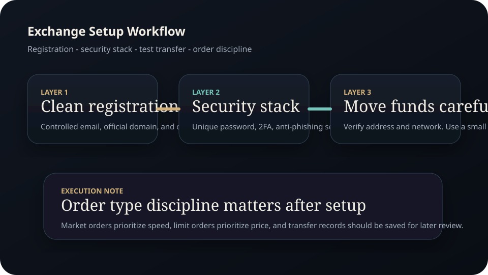
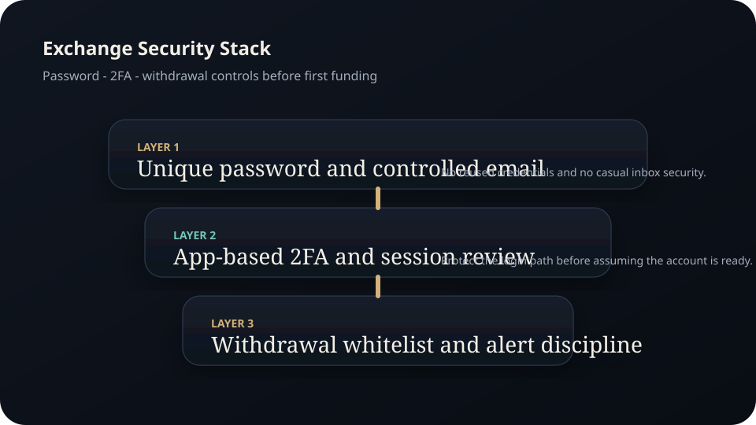
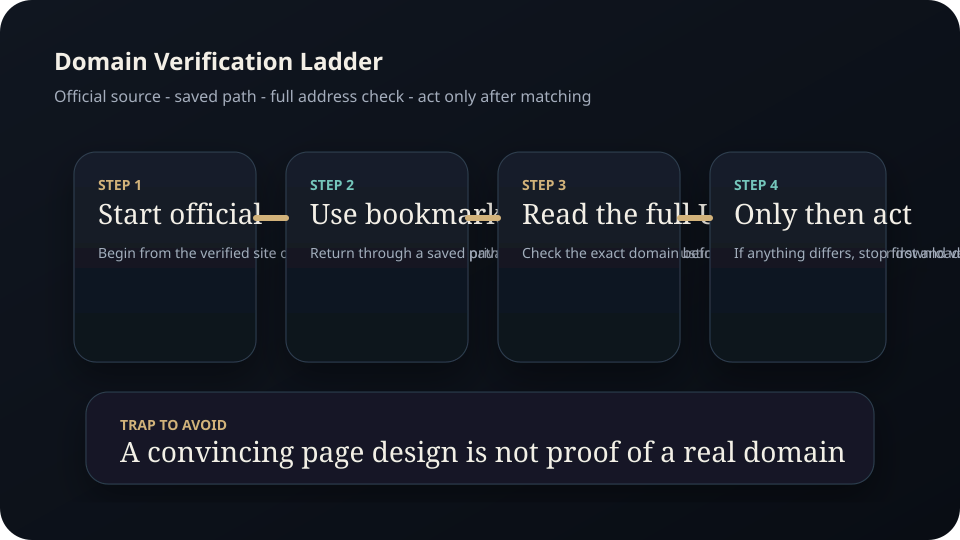

Full Edition
Exchange Setup Guide.
A full beginner edition on centralized exchange onboarding, account security, transfer discipline, order entry basics, and the support-risk checks that keep avoidable mistakes from becoming expensive mistakes.
Disclaimer Page
Important educational and legal notice
Exchange workflows vary by platform, jurisdiction, and regulation. This guide is an educational operating manual, not platform-specific support and not personalized advice.
- Madeesh P. Nissanka is not a financial advisor, broker, exchange support agent, tax professional, or attorney.
- This material is not a recommendation to use any specific exchange, asset, or jurisdictional pathway.
- No promise or guarantee of profit, approval, successful onboarding, or platform safety is made.
- Readers must verify current legal, regulatory, and platform requirements in their own jurisdiction before acting.
- Transfers to the wrong address or wrong network can result in permanent loss.
- Fraudsters frequently impersonate support staff, platform representatives, and analysts. Verification is mandatory.
Contents
Full chapter map
This edition treats setup discipline as part of risk management.
Before registration
Jurisdiction, identity flow, email hygiene, and device preparation.
Security stack
Passwords, two-factor authentication, anti-phishing tools, and session control.
Funding and transfer flow
Deposits, withdrawals, whitelists, and test transactions.
Order entry
Spot basics, market versus limit logic, and execution awareness.
Records and controls
Logs, screenshots, exports, and account review habits.
Support-risk defense
Fake support, fake links, and what to do before responding to urgency.
Chapter 1
Preparation starts before the account exists
The first mistake beginners make is treating registration like a casual app signup. In practice, the account becomes a financial gateway. That means the email account matters, the device matters, the jurisdiction matters, and the record-keeping habits matter.
Use an email account you control well, document the registration path, and avoid building an account from a rushed link in social media. If the platform requires identity verification, read the instructions carefully and keep records of what was submitted.
Chapter 2
The security stack should be finished before the first deposit
A beginner exchange account should not receive funds until the protection layers are in place. That usually includes a strong unique password, app-based two-factor authentication, review of login session settings, and any available anti-phishing or withdrawal security features.
- Use a unique password and store it securely.
- Enable app-based two-factor authentication where supported.
- Review session history and suspicious login alerts regularly.
- Understand withdrawal protections before moving significant value.
Chapter 3
Funding and withdrawal flow is where many avoidable losses happen
Deposits and withdrawals look simple until a user mixes up networks, addresses, memo fields, or destination wallets. A disciplined operator verifies the receiving address, verifies the selected network, and uses a small test transaction when the route is new.
Withdrawal address whitelists are useful because they reduce the chance of sending to an incorrect or compromised destination. They also slow down attackers if an account is ever compromised.

Figure A. Secure the account first, then use a small test transfer before scaling up.
Chapter 4
Order entry is an execution problem, not just a clicking problem
Investor.gov explains the practical difference between market, limit, and stop orders. That distinction matters on exchanges too. A market order prioritizes execution speed. A limit order prioritizes price discipline. A stop condition defines when the system should activate a trade or a protective action.
Beginners often use market orders in illiquid conditions because they want instant action. The result can be poor pricing. Understanding order types is one of the easiest ways to improve execution quality without needing a more complex strategy.
Chapter 5
Records are part of professionalism
Save transaction IDs, withdrawal confirmations, screenshots of important settings, and any export files relevant to the account. Clean records reduce confusion when something goes wrong and make later tax or compliance work much easier.
Good records also make it easier to spot a pattern of user error. If a person repeatedly clicks the wrong network or ignores warning screens, the record trail makes the habit visible.
Chapter 6
Support scams thrive on urgency and fake authority
CFTC fraud guidance warns about high-guarantee language and deceptive websites. The same mindset applies to fake exchange support. Fraudsters pose as agents, ask for passwords, ask for recovery codes, or send users to lookalike domains. Real support should be reached through official channels you verified yourself, not through random messages.
- Do not respond to support offers that begin in private messages.
- Verify every domain independently before logging in.
- Never share passwords, one-time codes, or wallet recovery details with anyone claiming to help.
- Pause first, verify second, act third.

Figure B. A clean exchange workflow is built in layers before any meaningful funding happens.

Figure C. Support-risk defense starts with a slower, repeatable domain-verification path.
Research Notes
Source foundation and further reading
This edition is original writing created from public-interest and official source inputs. It is not a republished exchange manual.
External facts were paraphrased and checked against official or public-interest sources available at drafting time. Before public launch, re-check platform-specific workflows and jurisdictional requirements against the current official documentation.
Publication Note
End of full edition
This manual is published as part of the Madeesh P. Nissanka educational library and is intended as a practical guide for readers building cleaner exchange onboarding habits.
Educational only. Not financial advice.
Madeesh P. Nissanka